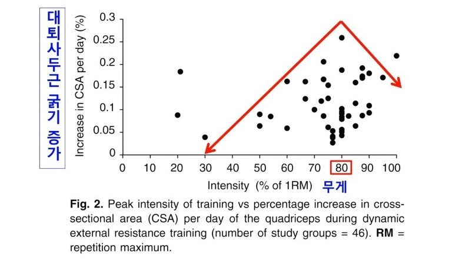
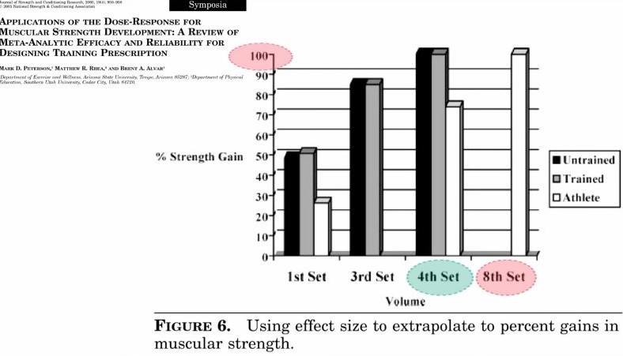

- ❗1RM의 80% 진행➡가장 많은 근성장.
- 
- ❗4세트~6세트 진행.
- 
- ❗어크로스 세트 (Across Set).
- ❗수축1초 이완 2초.
- ❗다관절 운동에 70~80% 투자.
조직 적응기 (2~3개월)
1RM 60% (20RM), 2~4(across set), Rest 60~90sec.
⬇
초급자
1RmM 70% (12RM), 4~6(across set), Rest 60~120sec.
1️⃣
- 스쿼트
- 레터럴 레이즈
- 내로우 그립 시티드 로우
- 벤치 프레스
- 크런치
2️⃣
- 데드리프트
- 오버헤드 프레스
- 랫풀 다운
- 인클라인 벤치 프레스
- 사이드 크런치
3️⃣
- 스쿼트
- 레터럴 레이즈
- 와이드 그립 시티드 로우
- 벤치 프레스
- 크런치
1️-🅰
(80%-8RM)
- ☝
- 프론트 스쿼트
- 루마니안 데드리프트
- 오버 헤드 프레스
- 케이블 리버스 플라이
- 중량 크런치 (4-6 sets)
- ✌
- 랫풀 다운
- 원 암 로우
- 덤벨 벤치 프레스
- 인클라인 바벨 프레스
- 암 컬 (3-6 sets)
1-🅱
(70%-12RM)
- ☝
- 로우 바 스쿼트
- 스모 데드리프트
- 덤벨 숄더 프레스
- 레터럴 레이즈
- 케이블 크런치 (4-6 sets)
- ✌
- 중량 친업
- 와이드 그립 시티드 로우
- 벤치 프레스
- 인클라인 덤벨 프레스
- 암컬 (3-6 sets)